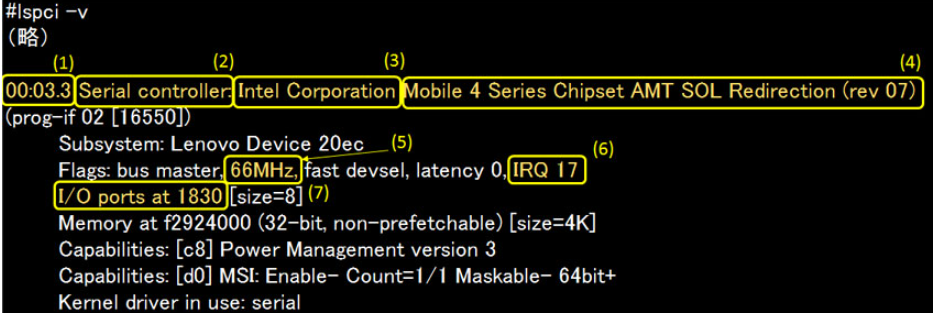

/procディレクトリと周辺知識
/procディレクトリ以下のファイルはデバイスファイルなどの特殊ファイルと呼ばれるものよりも特殊で実際には存在しないファイルである。しかも容量は0でありユーザーが必要としたときに動的生成を行っている。大半の仮想ファイルのタイムスタンプは常に現在時刻になっているが、これは絶えず更新され続けているということを表わしている。なお/procディレクトリ自体は、マシンの起動時に毎回作成される。
/procディレクトリ以下の主なファイル
| ファイル名 | 説明 |
|---|---|
| /proc/cpuinfo | CPU情報。lscpuコマンドのもと |
| /proc/interrupts | IRQ情報(Interrupt Request) |
| /proc/ioports | Ｉ/Ｏアドレス情報 |
| /proc/meminfo | メモリ情報 |
| /proc/bus/usb/~ | USBデバイス情報 |
| /proc//bus/pci/~ | PCIデバイス情報 |
| /proc/modules | どのようなモジュールが取り込まれているのかを確認する。lsmodコマンドのもと |
IRQとは
IRQ(Interrupt ReQuest)とは、マウスやキーボードなどの周辺機器(デバイス)からCPUへの割り込み要求のことです。IRQには0から1、2、3のように順に番号がつき、そのうちのいくつかは特定のデバイスに割り当てられています。例えば0はシステムタイマー、1はキーボードに割り当てられています。IRQ番号が重複しているとハードウェアが正常に動作しないことがあります。参考
USBとは
Universal Serial Busの略である。キーボードだけ，マウスだけといった，装置毎のバスではなく，何にでも使える (Universal) バスが望まれたために生まれたものである。バスとは命令やデータが通る道(電気が流れる線)のことである。USBには以下の特徴がある。
- 最大127台までUSBデバイスを接続可能
- さまざまなUSBデバイスを同一コネクタで接続可能
- 電源を入れたまま接続、取り外し可能
- USBポートからUSBデバイスに電源を供給可能
USBデバイスはいくつかのデバイスクラスに分けれれる。ハードウェアを利用するにはデバイスドライバが必須だがそれぞれのデバイスクラスにはクラスドライバという汎用ドライバが用意されています。
| デバイスクラス | USBデバイス |
|---|---|
| HID(Human Interface Device) | キーボード、マウス |
| Mass Storage Class | ハードディスク、USBメモリー |
| ACM Communication Device Class | モデム、TAなど |
| Audio Class | マイク、スピーカー |
| ワイヤレスコントローラー | Wi-Fiアダプタ、Bluetoothアダプタ |
| プリンタ | プリンタ |
I/Oポートとは
cpuが周辺機器とデータをやり取り委する際の窓口がI/Oポートです。CPUは周辺機器と直接やり取りするわけではなくI/Oポートを通してやり取りします。各I/Oポートにはそれぞれ固有のI/Oポートアドレスが割り当てられ、CPUは制御したいポートのアドレスを指定してデータの読み書きを行うことで命令の送信や受信データの受け取りなどを行なうことができる。参考
PCIとは
Peripheral Component Interconnect(周囲・部品・連結)の略で規格の一つです。PCIスロットにPCIカードを差し込むことで拡張できます。PCIデバイスとはPCIバスに接続されたデバイスのことです。
- (1)PCI識別番号 00:03.3
- (2)PCIデバイスの種類 Serial controller
- (3)ベンダー名（ベンダーID） Intel Corporation
- (4)デバイス名 Mobile 4 Series Chipset AMT SOL Redirection (rev 07)
- (5)バスの速度(詳細表示のみ) 66MHz
- (6)IRQ番号(詳細表示のみ) 17
- (7)I/Oポートアドレス(詳細表示のみ) 1830
カーネルモジュールとは
カーネルモジュールとは、Linuxカーネルの機能の一部を、カーネル本体とは別にロード、アンロードできるように分離したサイズの小さいバイナリファイルです。デバイスドライバなども含まれます。モジュールとしてカーネルから切り離すことでカーネル本体のサイズを小さくし、必要な機能だけをロードしたり、不要な機能はアンロードするというように使用できます。必要なデバイスドライバは自動的にロードされますが、手動でロードする場合はmodprobeコマンドで実行します。